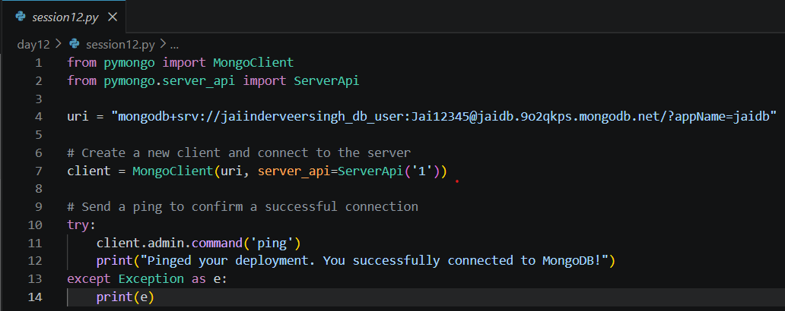
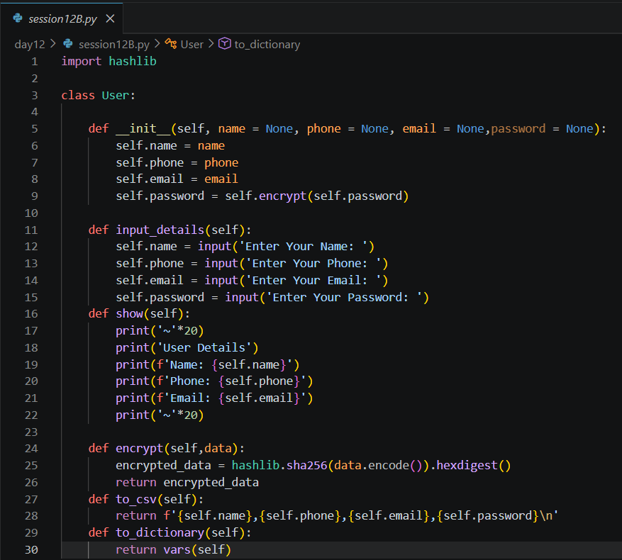
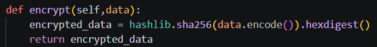
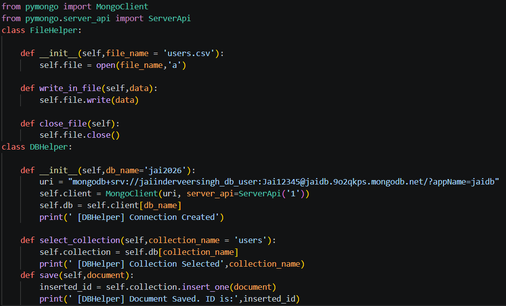
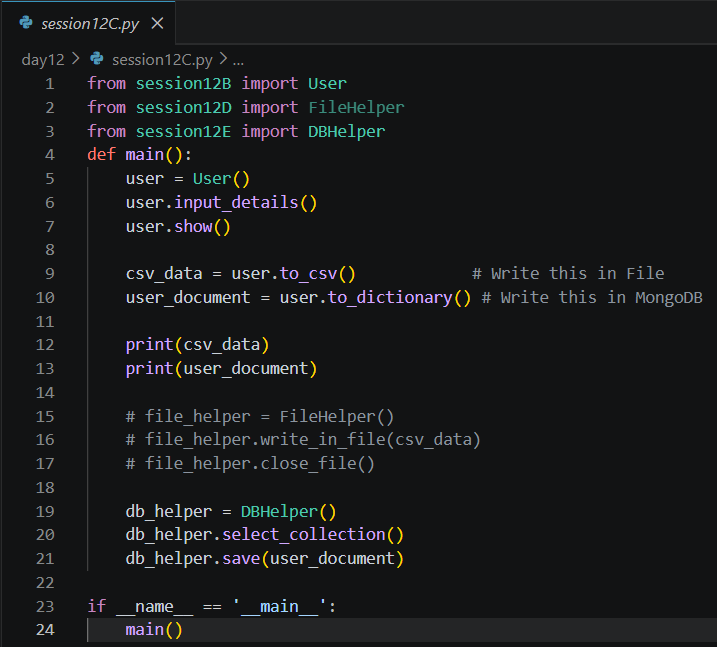
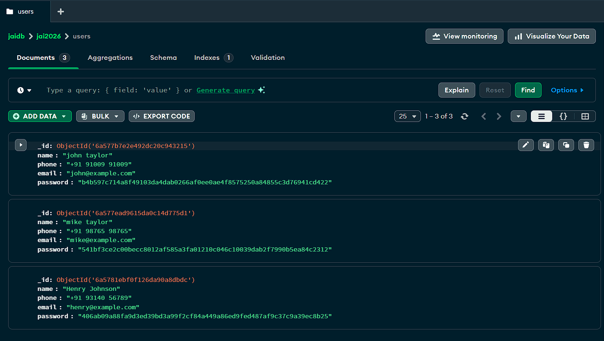

Date: 10th July 2026
Duration: 2 Hours
Training Company: Auribises Technologies
Trainer: Ishant Kumar
Day 12 marked the beginning of database programming using MongoDB. Until now, our applications stored data either in variables or text files. In this session, we learned how to connect Python applications to a cloud-hosted MongoDB Atlas database and permanently store user information. The trainer also emphasized writing modular and reusable code by separating application logic into dedicated helper classes.
The session introduced password hashing for improved security, reusable File and Database helper classes, and object serialization techniques that prepared us for building complete applications in the upcoming sessions.
The session began by connecting Python to a MongoDB Atlas cluster using the PyMongo
library. We created a MongoClient instance using the database connection URI and verified the
connection by sending a ping command to the server.
This activity demonstrated how cloud-hosted databases can be accessed directly from Python applications, enabling persistent storage without relying on local files.

After establishing the connection, we explored how MongoDB organizes information into databases and collections. Using PyMongo, we listed the available collections inside our database and learned how documents are grouped within collections instead of traditional SQL tables.
Understanding this structure helped us prepare for storing application data in MongoDB during the remainder of the session.
To organize user information efficiently, we designed a dedicated User class containing attributes such as name, phone number, email address, and password. The class also included methods for accepting user input, displaying information, exporting data as CSV, and converting objects into Python dictionaries for database storage.
This reinforced the principles of Object-Oriented Programming by encapsulating both data and related operations inside a single reusable class.

Instead of storing passwords in plain text, the trainer introduced password hashing using Python's built-in
hashlib module. User passwords were converted into SHA-256 hash values before storage,
demonstrating a more secure approach to handling sensitive information.
Although simplified for learning purposes, this activity introduced an important cybersecurity concept that is widely used in modern authentication systems.

To improve the overall structure of the application, the trainer introduced the concept of helper classes. Instead of placing all the logic inside a single file, responsibilities were divided into separate classes, making the code more modular, reusable, and easier to maintain.
A FileHelper class was created to manage file operations such as writing user data into a CSV file, while a DBHelper class handled all MongoDB-related tasks, including establishing database connections, selecting collections, and inserting documents. This separation of responsibilities follows good software engineering practices and makes future application development much more organized.

The DBHelper class encapsulated all MongoDB operations inside reusable methods. During initialization, it established a connection to the MongoDB Atlas cluster and selected the required database. Additional methods allowed the program to choose a collection and save user documents without exposing database-specific code to the rest of the application.
This abstraction simplified database interactions and demonstrated how helper classes can hide implementation details while providing clean interfaces for application development.
The final program combined all previously created components into a single workflow. A User object collected user details, converted the information into both CSV and dictionary formats, and passed the dictionary to the DBHelper for storage inside MongoDB.
This demonstrated how multiple classes can work together to build a complete application where each class performs a specific responsibility while contributing to the overall system.

The primary class activity involved developing a simple user registration system that accepted user information, encrypted the password using SHA-256, converted the object into different formats, and finally stored the data inside a MongoDB collection.
This activity connected several concepts learned throughout the training, including Object-Oriented Programming, file handling, password hashing, helper classes, and cloud database integration. It also demonstrated how applications can separate business logic from storage logic to improve maintainability.

No separate programming assignment was provided during this session. The focus remained on designing reusable helper classes and successfully integrating MongoDB with a Python application. The hands-on implementation itself served as practical experience for understanding cloud database connectivity and modular application architecture.
ping
command.hashlib module and the SHA-256 algorithm.Day 12 was one of the most significant sessions of the training because it introduced database programming and demonstrated how Python applications interact with cloud-hosted databases. Connecting a local Python program to MongoDB Atlas made the learning experience much more practical, as the application was no longer limited to temporary variables or text files.
Another valuable lesson was the importance of writing modular and maintainable code. Separating responsibilities into dedicated classes such as User, FileHelper, and DBHelper made the overall application cleaner, easier to understand, and more reusable. This reinforced the software engineering principle of dividing complex systems into smaller, manageable components.
Learning about password hashing also highlighted the importance of protecting sensitive user information. Although this project was created for educational purposes, it introduced real-world security practices that are commonly used in modern applications. Overall, this session laid the foundation for building database-driven applications that will be expanded further in the upcoming training sessions.
The next session will build upon the database concepts introduced today by performing CRUD (Create, Read, Update, Delete) operations and integrating MongoDB with user interfaces, allowing us to develop more interactive and feature-rich Python applications.